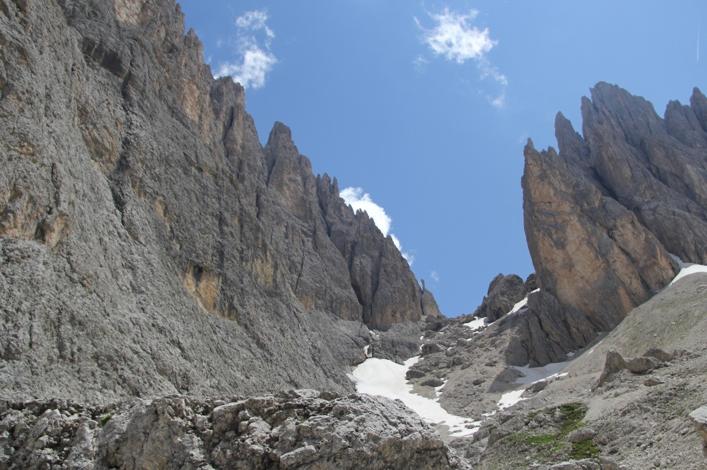

Wielrennen
Op vakantie gaan
U kan me omschrijven als een actieve jongeman, die liever moe is dan lui. In mijn vrije tijd ben ik meestal
intensief bezig met sporten.
Mijn favoriete bezigheid is fietsen en het liefst nog in
competitie.

Eventjes fietsen na schooltijd, brengt rust en geeft me daarna de kracht om mijn taken uit te voeren.
Het is natuurlijk ook leuk om deze passie te kunnen delen met andere wielrenners.
Naast het fietsen, kan ik ook genieten van een toertje lopen of baantjes zwemmen. Ook wekelijks
staan Core stability oefeningen op het programma.
In de vakantie vind ik een tripje naar de bergen met mijn familie steeds leuk. Naast een berg
overwinnen met de fiets, kan ik rust vinden in een mooie bergwandeling. De dag afsluiten met een
lekker gerechtje maakt het compleet.
